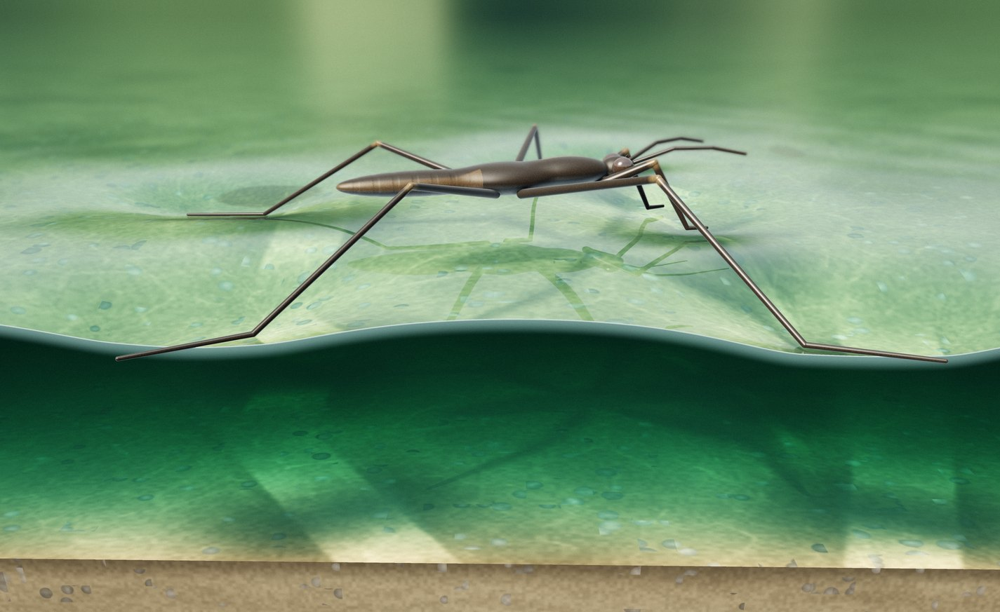
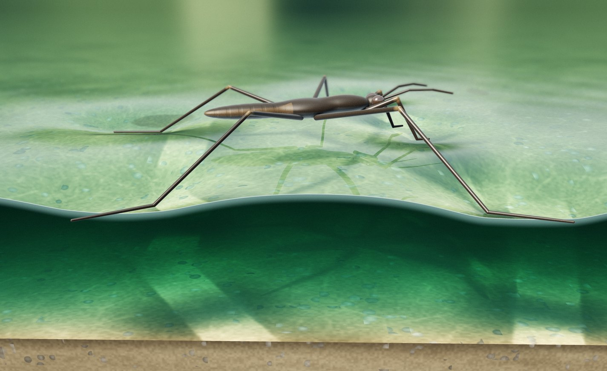
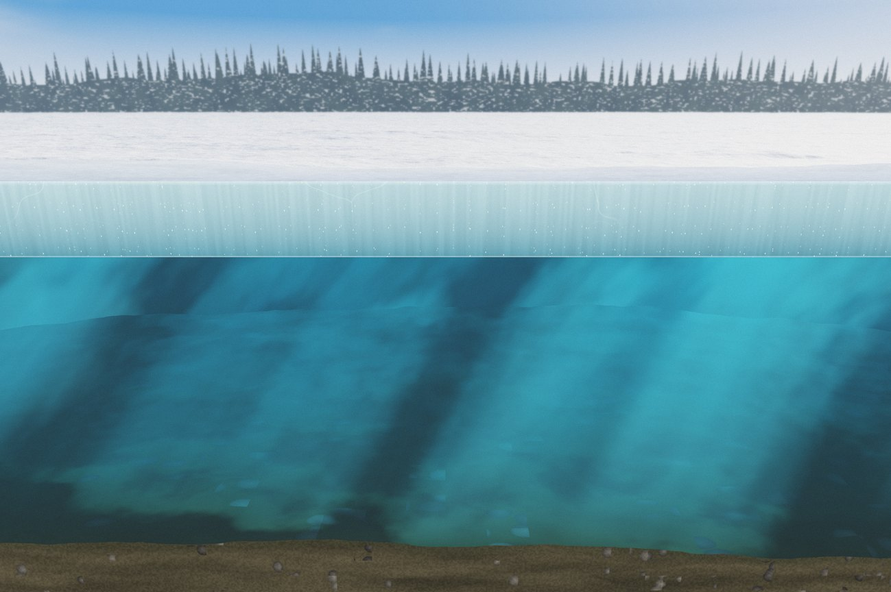

Chapter 4 · Water and Organic Compounds
Lesson 4.1 · Grade 7 · MYP Year 3
Water
ВодаYou willexplain the properties of water and its importance for living organisms.
EngageUNIT INQUIRY · CHAPTER 4
Our unit: substances that support life
Наш раздел: вещества, которые поддерживают жизнь
Key concept
Systems
“Parts that work together as one whole.”
Системы
Related concepts
Function · Interaction
“The job of a part.” /
“How things affect one another.”
“How things affect one another.”
Функция · Взаимодействие
Global context
Globalization and sustainability
“How people can use water and plant resources responsibly.”
Statement of inquiry
Interactions among substances within living systems support essential functions, and understanding these relationships can guide responsible use of natural resources.
Unit Planner draft: the statement of inquiry, global context exploration and tasks are proposed and need department approval.
EngageUNIT INQUIRY · CHAPTER 4
Questions we will explore
Вопросы, которые мы будем исследовать
FACTUAL
Which properties and substances help water, human bodies and plants function?
Simple English: What does water do? What substances do we need?
CONCEPTUAL
How do interactions among substances affect the functioning of living organisms?
Simple English: How do substances work together or affect living things?
DEBATABLE
To what extent can people meet living organisms’ needs while using water and fertilizers responsibly?
Simple English: Can we use resources responsibly and still meet living things’ needs?
Criteria
Proposed for summative assessment: A Knowing and understanding and C Processing and evaluating (department approval required). B and D are practised formatively.
EngageTHINK · PAIR · SHARE
Big question
How can some small animals walk on the surface of water?
Как некоторые мелкие животные могут ходить по поверхности воды?
I think they can walk on water because …
Water has surface tension: the surface of water resists an external force. Today we find out why.
VocabularyENGLISH · РУССКИЙ · 1 of 2
Words for water’s properties
solvent
растворитель
a liquid in which solids dissolve
dissolve
растворяться
a solid mixes into a liquid and we cannot see it
surface tension
поверхностное натяжение
the surface of a liquid resists an outside force
cohesion
когезия (сцепление)
water molecules stick to each other
adhesion
адгезия (прилипание)
water molecules stick to other molecules
molecule
молекула
a very small particle; a water molecule is H₂O
Say it: “Cohesion means water sticks to water.” · “Adhesion means water sticks to other things.”
VocabularyENGLISH · РУССКИЙ · 2 of 2
Words for heat and states of water
specific heat capacity
удельная теплоёмкость
energy needed to warm 1 g of a substance by 1 °C
density
плотность
how much mass is packed into a space
melting
плавление
solid ice turns into liquid water (0 °C)
boiling
кипение
liquid water turns into water vapour (100 °C)
water vapour
водяной пар
water as a gas
states of water
состояния воды
solid (ice), liquid (water), gas (vapour)
Quick check: point to the card when the teacher says the Russian word.
Explore & ExplainTEXTBOOK p. 56
Water for life
Вода для жизни
2/3
of the human organism is water
Water is a solvent
Water is the solvent in biochemical reactions.
Water transports
Water transports nutrients and helps reactions inside the cell to complete.
All organisms need water
People cannot survive a long time without water. Other organisms need water too.
Next: zoom inside the drop ↘
Explore & ExplainFIGURE 4.1.1
Surface tension
Поверхностное натяжение


weight (pushes down)
the water surface resists (pushes back)
Cut-away viewthe front of the water is cut open
Key term
Surface tension — a property of the surface of a liquid that allows it to resist an external force.
Molecules at the surface hold together (cohesion). The surface acts like a thin skin, so a light animal does not sink.
Quick check
What would happen if the strider were much heavier?
The surface could not resist such a big force. The strider would sink.
Explore & ExplainCOHESION + ADHESION IN PLANTS
How water climbs a plant
Как вода поднимается по растению
Because of cohesion and adhesion, water molecules move upwards in plants easily — from the soil, through the roots and stem, to the leaves.
Вода поднимается от почвы к листьям.
Explore & ExplainFIGURE 4.1.3
Solid, liquid and gas
Твёрдое, жидкое, газообразное
Ice melts at 0 °C and turns into water. Water boils at 100 °C and turns into water vapour.
Explore & ExplainTEXTBOOK p. 56
Water keeps temperature steady
Вода поддерживает постоянную температуру
Key term
Specific heat capacity — the amount of energy required to raise the temperature of one gram of a substance by one degree Celsius.
Water has a high heat capacity. Water absorbs heat and keeps the body’s temperature constant. So water regulates body temperature.
Pair talk
Why is it important that our body has a lot of water?
Water absorbs heat, so body temperature stays constant. Water is also the solvent for reactions in cells.
Explore & ExplainPREDICT · OBSERVE · EXPLAIN
Why do lakes freeze only on top?
Почему озёра замерзают только сверху?

ice floats on top
liquid water below
water under ice ≈ 4 °C
Cut-away viewa frozen lake in winter
Predict
Will an ice cube sink or float in a glass of water?
It floats: ice is less dense than water.
The density of ice is less than that of water, so ice floats. Freezing starts on the surface of lakes, not on the bottom.
Under the ice the water is about 4 °C. At 4 °C water has its highest density. This helps aquatic organisms survive the winter.
Main activityLABORATORY WORK No. 2 · PAIRS
Drops on a coin
Капли на монете
Materials
glass of water · dropper · coin · paper towel
Pre-lab questions
1. What is cohesion?
2. What other properties does water have?
2. What other properties does water have?
Predict first
How many drops will stay on the coin before water spills?
I predict ___ drops because …
⚠ Safety: keep water away from sockets and devices · wipe spills at once · wash hands after the lab.
Procedure
- Place the coin on a flat surface. Dry it with the towel.
- Slowly drip water onto the coin — one drop at a time.
- Count the drops. Write the number when the coin is full.
- Keep dripping. Write the number when water spills.
Main activityRESULTS · TYPE REAL CLASS DATA
Our class results
Результаты нашего класса
| Pair | Drops: coin is full | Drops: water spills |
|---|
–
Mean · spills
–
Lowest
–
Highest
Discuss
Why are the numbers of different pairs not the same?
Different coins, droppers and drop sizes; some pairs dripped faster or counted differently.
Our results show ___. The numbers are different because ___.
Type real class data only.
Main activityPOST-LAB QUESTIONS · TEXTBOOK p. 57
What does our coin show?
Что показала наша монета?
Question 1
Why did the water on the coin not spill?
The water did not spill because …
Water molecules stick together (cohesion), so the surface holds like a skin (surface tension). Water also sticks to the coin (adhesion).
Question 2
In which processes is this property used? How does it help living organisms?
It helps … to …
Water moves up plants from the soil to the leaves. Small animals such as water striders stand on the water surface.
Question 3
What would happen if water molecules could not stick to each other?
If …, then …
No dome: water would spill after very few drops. Water could not move up plants easily, and striders would sink.
ApplyDRAG A PROPERTY TO EACH SITUATION
Which property helps?
Какое свойство помогает?
surface tension
cohesion + adhesion
ice is less dense
high heat capacity
water is a solvent
A water strider stands on a pond.
Water moves from the roots up to the leaves.
Fish survive under a frozen lake in winter.
Body temperature stays constant on a hot day.
Nutrients are carried; reactions happen in cells.
Fact · textbook p. 57
785 million people have no access to an improved water source.
Debatable · discuss
Can we use water responsibly and still meet living things’ needs? Give one idea for our school.
Water is important for … because …. We can …
Exit ticketWORK ALONE · 3 MINUTES
Exit ticket
Билет на выход: ответь сам
1 · Recall
What is surface tension?
A property of the surface of a liquid that allows it to resist an external force.
2 · Understanding
Explain why ice floating on a lake helps fish survive the winter.
Ice is less dense, so it floats and the lake freezes only on top. The water under the ice stays liquid (about 4 °C), so fish can live there.
3 · Application
A tall tree needs water in its top leaves. Use cohesion and adhesion to explain how the water gets there.
Water molecules stick to each other (cohesion) and to the walls of the stem tubes (adhesion). So water moves up from the soil, through the roots and stem, to the leaves.